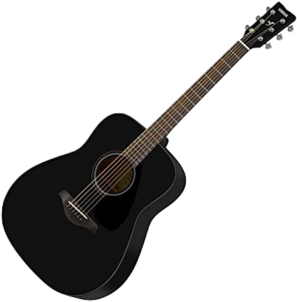
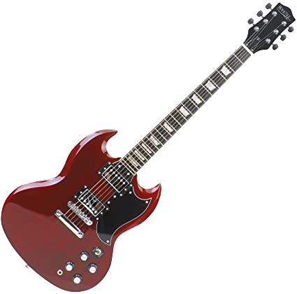
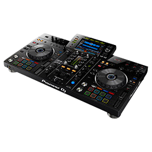
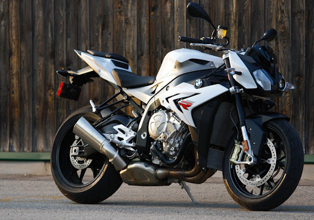

Bienvenue chez Augustin Rondeau 🤗
🚨Retrouvez moi sur les réseaux🚨
Facebook
Linkedin
Instagram
🎸 Musique 🎧
Je suis passionné de musique depuis tout petit voici ma guitare acoustique & ma guitare électrique.
 
Je mix de temps en temps aussi sur des platines pour faire la fête ahah🍻!

Motos 🏍️💨
J'adore les motos d'ailleurs voici une photo de la mienne (la magnifique BMWS1000R) :

Mes Expériences 💼📚
Après l'obtention d'un BAC ES je me suis logiquement orienté vers la meilleure école de commerce du monde : Audencia
Après mon bachelor j'aimerais poursuivre toujours à Audencia dans un master général ou spécialisé dans la gestion des unités musicales 🎵